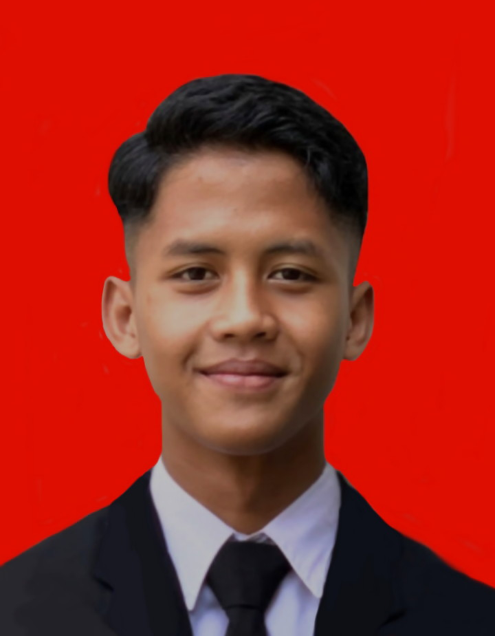

Profil

"Mahasiswa Teknik Informatika dengan keahlian dalam pengembangan perangkat lunak dan basis data. Bersemangat menciptakan solusi teknologi inovatif dan berdampak positif, serta terus mengembangkan keahlian di bidang TI."
Biodata
-
Nama :
Faris Nuryansyah
TTL : Kuningan 12 April 2005
Usia : 19 Tahun
Agama : Islam
Status : Belum Menikah
Tinggi Badan : 165 cm
Berat Badan : 48 kg
Pendidikan
- SDN Sukaresmi 05 Cikarang : [2011 - 2017]
- SMPN 3 Cikarang : [2017 - 2020]
- SMK Garuda Nusantara Tegal Gede : [2020 - 2023]
Pengalaman Kerja
- PT. Gunze Indonesia : Operator Produksi [2023 - 2024]
Keahlian
- Melakukan overhaul pada kendaraan ringan.
- Membaca gambar teknik.
- Menggunakan alat ukur seperti multitester, micrometer, dan jangka sorong.
Portofolio
-
Kontak
farisn292@gmail.com
+62 858-8204-5908